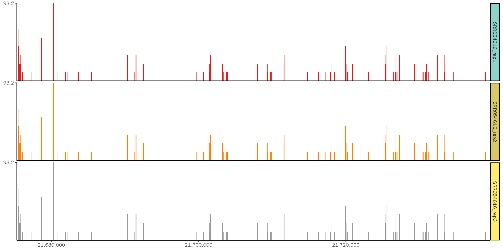

Time And Memory
TimeAndMemory.RmdIntroduction
For large track files, it’s usually time and memory consuming to create coverage plot. ggcoverage provides two memory and time-efficient ways:
- For bigwig files and bam files that do not require normalization:
ggcoverageloads the visualized region specified by users instead of loading the whole files and then extracting the visualized region. - For bam files that require normalization:
ggcoverageutilizes BiocParallel to perform normalization parallelly.
Load region
Test data
Here, we will load a big BAM file (~27G) from 10x single cell RNA-seq:
ls -lh possorted_genome_bam.bam
#> -rw-r--r--. 1 songyabing wanglab 27G 8月 31 2021 possorted_genome_bam.bamLoad region
library(ggcoverage)## Registered S3 method overwritten by 'GGally':
## method from
## +.gg ggplot2## Warning: replacing previous import 'ggplot2::annotate' by 'ggpp::annotate' when
## loading 'ggcoverage'
# prepare metadata
sample.meta = data.frame(SampleName=c('possorted_genome_bam'),
Type = c("possorted_genome_bam"),
Group = c("10x"))
sample.meta## SampleName Type Group
## 1 possorted_genome_bam possorted_genome_bam 10x
# prepare track folder
track.folder = '~/projects/ggcoverage'
# load the track
# region length: 3631
system.time(track.df <- LoadTrackFile(
track.folder = track.folder, format = "bam", norm.method = "None",
region = "chr11:118339075-118342705",
extend = 0, meta.info = sample.meta
))## Calculate coverage with GenomicAlignments when norm.method is None!## 用户 系统 流逝
## 0.482 0.011 0.562check the data:
head(track.df)## seqnames start end score Type Group
## 1 chr11 118339075 118339075 136 possorted_genome_bam 10x
## 2 chr11 118339076 118339076 169 possorted_genome_bam 10x
## 3 chr11 118339077 118339077 187 possorted_genome_bam 10x
## 4 chr11 118339078 118339078 233 possorted_genome_bam 10x
## 5 chr11 118339079 118339079 257 possorted_genome_bam 10x
## 6 chr11 118339080 118339080 281 possorted_genome_bam 10xFor larger region:
# region length: 203631
system.time(LoadTrackFile(
track.folder = track.folder, format = "bam", norm.method = "None",
region = "chr11:118339075-118542705",
extend = 0, meta.info = sample.meta
))## Calculate coverage with GenomicAlignments when norm.method is None!## 用户 系统 流逝
## 0.862 0.032 0.900Create coverage
With the track dataframe, we can generate coverage plot.
# create basic coverage plot
# the running time is very small
system.time(basic.coverage <- ggcoverage(data = track.df, color = "red",
range.position = "out", show.mark.label = FALSE))## 用户 系统 流逝
## 0.046 0.001 0.047The coverage plot (the bars are relatively dense, and can be viewed more clearly when saved as a PDF): 
Parallel normalization
Test data
To test the perfromance, we use three identical bam files from SRR053616.
Data folder for sequential normalization:
# test the sequential normalization
ls -lh ./test
#> total 2.0G
#> -rw-r--r--. 1 songyabing wanglab 3.9M May 26 16:44 SRR054616_rep3.bam.bai
#> -rw-r--r--. 1 songyabing wanglab 3.9M May 26 16:44 SRR054616_rep2.bam.bai
#> -rw-r--r--. 1 songyabing wanglab 3.9M May 26 16:44 SRR054616_rep1.bam.bai
#> -rw-r--r--. 1 songyabing wanglab 646M May 26 16:44 SRR054616_rep3.bam
#> -rw-r--r--. 1 songyabing wanglab 646M May 26 16:44 SRR054616_rep2.bam
#> -rw-r--r--. 1 songyabing wanglab 646M May 26 16:44 SRR054616_rep1.bamData folder for parallel normalization:
# test the parallel normalization
ls -lh ./test2
#> total 2.0G
#> -rw-r--r--. 1 songyabing wanglab 3.9M May 26 16:44 SRR054616_rep3.bam.bai
#> -rw-r--r--. 1 songyabing wanglab 3.9M May 26 16:44 SRR054616_rep2.bam.bai
#> -rw-r--r--. 1 songyabing wanglab 3.9M May 26 16:44 SRR054616_rep1.bam.bai
#> -rw-r--r--. 1 songyabing wanglab 646M May 26 16:44 SRR054616_rep3.bam
#> -rw-r--r--. 1 songyabing wanglab 646M May 26 16:44 SRR054616_rep2.bam
#> -rw-r--r--. 1 songyabing wanglab 646M May 26 16:44 SRR054616_rep1.bamSequential normalization
# prepare sample metadata
sample.meta = data.frame(SampleName=c('SRR054616_rep1','SRR054616_rep2','SRR054616_rep3'),
Type = c("SRR054616_rep1","SRR054616_rep2","SRR054616_rep3"),
Group = c("rep1", "rep2", "rep3"))
sample.meta
# track folder
track.folder = "./test"
# run
system.time(track.df <- LoadTrackFile(
track.folder = track.folder, format = "bam", norm.method = "RPKM",
region = "14:21,677,306-21,737,601", bamcoverage.path = "~/anaconda3/bin/bamCoverage",
extend = 2000, meta.info = sample.meta
))
#> user system elapsed
#> 1169.767 35.005 1208.704The elapsed time (unit: seconds) is the time spent from the start to the end of the command.
Parallel normalization
# prepare sample metadata
sample.meta = data.frame(SampleName=c('SRR054616_rep1','SRR054616_rep2','SRR054616_rep3'),
Type = c("SRR054616_rep1","SRR054616_rep2","SRR054616_rep3"),
Group = c("rep1", "rep2", "rep3"))
sample.meta
# track folder
track.folder = "./test2"
# run with three cores
system.time(track.df <- LoadTrackFile(
track.folder = track.folder, format = "bam", norm.method = "RPKM",
region = "14:21,677,306-21,737,601", bamcoverage.path = "~/anaconda3/bin/bamCoverage",
extend = 2000, meta.info = sample.meta, n.cores = 3
))
#> user system elapsed
#> 1191.628 36.818 424.143Here we can see, the time spent in parallel normalization is nearly one-third that of sequential normalization.
Create coverage
In general, the loading step is the most time-consuming step. With the track dataframe, we can generate coverage plot.
# read the track dataframe
track.df = utils::read.table(file = "~/projects/ggcoverage/ggcoverage_parallel_track.txt",
sep = "\t", header = T)
# create basic coverage plot
# the running time is very small
system.time(basic.coverage <- ggcoverage(data = track.df, color = "auto",
range.position = "out", show.mark.label = FALSE))## Warning in geom_coverage(data = data, mapping = mapping, color = color, : The
## color you provided is not as long as Type column in data, select automatically!## 用户 系统 流逝
## 0.018 0.000 0.018The coverage plot: 